FreeDoko nutzt die folgenden Symbole
Mit den Team-Symbolen wird angezeigt, welches Team ein Spieler ist. Spielt ein Spieler ein Sonderspiel (wie Solo und Armut) wird statt des Teams das entsprechende Spielsymbol auf dem Tisch gezeichnet.
Die Spieltyp-Symbole werden im Spieltyp-Fenster angezeigt. Wenn ein Spieler ein Sonderspiel spielt (wie Solo und Armut) wird statt seines Teams das entsprechende Spielsymbol auf dem Tisch gezeichnet.
Die Solosymbole zeigen an, welche Karten Trumpf sind:
Ist die Hochzeit noch ungeklärt wird neben den zwei Kreuz Damen mit zwei weiteren Karten angezeigt, welche Stiche Entscheidungsstiche sind
Hat ein Spieler die Trumpfarmut angenommen, so zeigt das Armut-Symbol, wie viele Trumpfkarten der Armutler zurückgeschoben bekommen hat:

Die Ansagen zeige, welche Ansage der Spieler getätigt hat. Die Zahl durchgestrichen ist die Ansage, ist die Zahl nicht durchgestrichen, liegt eine Gegenansage vor.
Die Schweine- und Hyperschweine-Symbole gibt es in jeder Farbe und zeigen an, daß der Spieler Schweine/Hyperschweine hat.
| Kreuz | Pik | Herz | Karo | |
|---|---|---|---|---|
| Schweine | 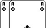 | 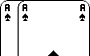 | 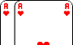 | 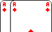 |
| Hyperschweine | 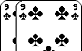 | 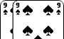 | 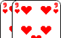 | 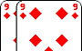 |
| Schweine und Hyperschweine | 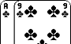 | 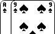 | 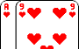 | 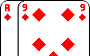 |
| Hyperschweine (Spiel ohne Neunen) |
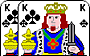 | 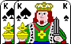 | 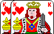 | 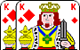 |
| Schweine und Hyperschweine (Spiel ohne Neunen) |
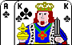 | 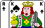 | 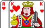 | 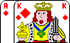 |